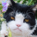
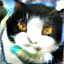
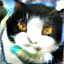

Part 1: Inverting the Generator
In this part, we try to reconstruct a target image using various latent space encodings (Z, W, W+). We also compare various weightings of L1 pixel loss and Perceptual loss. In all of the images below, l1_wgt=10. Qualitatively, the best results occur when the weightings of the L1 and Perceptual losses are equal. Another note is that StyleGan drastically outperforms VanillaGan in terms of the quality of the reconstructions
perc_wgt
Target
VanillaGan Z
StyleGan Z
StyleGan W
StyleGan W+
0.01

0.1
1

10


100
1000


 
